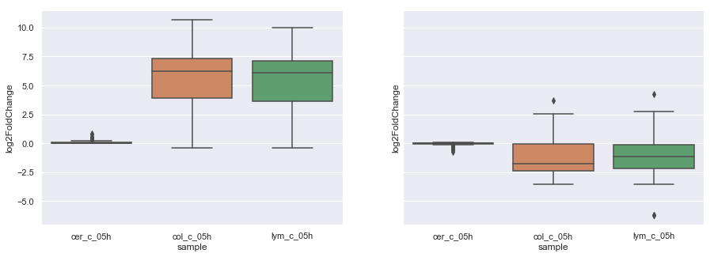
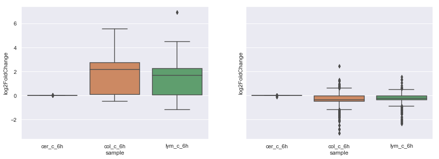
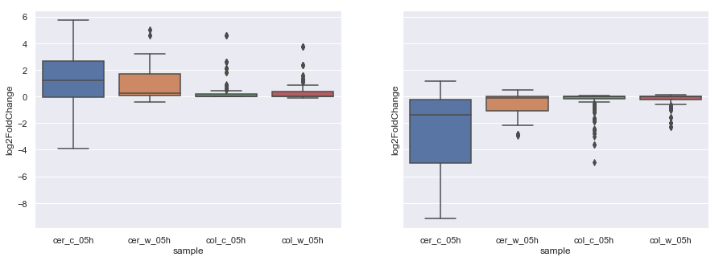
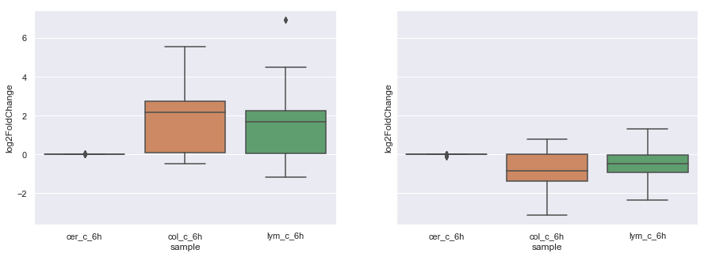
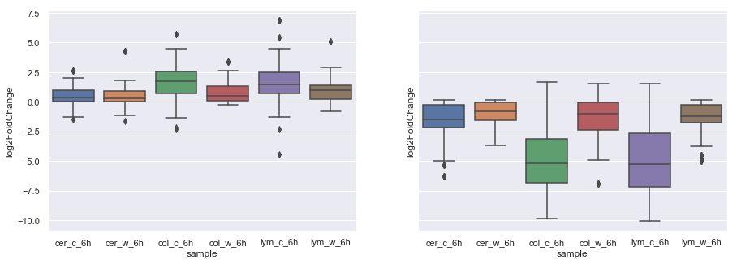

Table of Contents
1 05hr c/w
These treatments are comparing the X axis to their water treatments, not to each other, selection is done with the 10 most upregulated genes from each 3 genotypes, and pooled together for reference across genotypes. The second heatmap is the same, only it is downregulated top 10 for each
DE_pairings_05hr = read_xl('/Users/hughesn/PHD/Transcripts/Data/pairings_05hr.xlsx')
1.1 Clustermap of largest/smallest DE genes
import matplotlib.pyplot as plt import seaborn as sns import numpy as np %matplotlib inline make_two_clustermaps(DE_pairings_05hr, n=10)
<Figure size 720x720 with 4 Axes>

<Figure size 720x720 with 4 Axes>

1.2 Boxplots of differential changes
<Figure size 1080x360 with 2 Axes>

Figure 3: Boxplots of differential expressions from 50 largest (left) and 50 lowe05hst (right) DE genes
\clearpage
2 6hr c/w
These treatments are comparing the X axis to their water treatments, not to each other, selection is done with the 10 most upregulated genes from each 3 genotypes, and pooled together for reference across genotypes. The second heatmap is the same, only it is downregulated top 10 for each
DE_pairings_6hr = read_xl('/Users/hughesn/PHD/Transcripts/Data/pairings_6hr.xlsx')
2.1 Clustermap of largest/smallest DE genes
import matplotlib.pyplot as plt import seaborn as sns import numpy as np %matplotlib inline make_two_clustermaps(DE_pairings_6hr, n=10)
<Figure size 720x720 with 4 Axes>

<Figure size 720x720 with 4 Axes>

2.2 Boxplots of differential changes
<Figure size 1080x360 with 2 Axes>

Figure 6: Boxplots of differential expressions from 50 largest (left) and 50 lowest (right) DE genes
\clearpage
3 lym 05hr c/w
These treatments are comparing the X axis to their lym counter part. e.g. cerw is compared to lymw and colc is compared to lymc.
DE_pairings_to_lym_05hr = read_xl('/Users/hughesn/PHD/Transcripts/Data/pairings_to_lym_05hr.xlsx')
3.1 Clustermap of largest/smallest DE genes
import matplotlib.pyplot as plt import seaborn as sns import numpy as np %matplotlib inline make_two_clustermaps(DE_pairings_to_lym_05hr, n=10)
<Figure size 720x720 with 4 Axes>

<Figure size 720x720 with 4 Axes>

3.2 Boxplots of differential changes
<Figure size 1080x360 with 2 Axes>

Figure 9: Boxplots of differential expressions from 50 largest (left) and 50 lowest (right) DE genes
\clearpage
4 lym 6hr c/w
These treatments are comparing the X axis to their lym counter part. e.g. cerw is compared to lymw and colc is compared to lymc.
DE_pairings_to_lym_6hr = read_xl('/Users/hughesn/PHD/Transcripts/Data/pairings_to_lym_6hr.xlsx')
4.1 Clustermap of largest/smallest DE genes
import matplotlib.pyplot as plt import seaborn as sns import numpy as np %matplotlib inline make_two_clustermaps(DE_pairings_to_lym_6hr, n=10)
<Figure size 720x720 with 4 Axes>

<Figure size 720x720 with 4 Axes>

4.2 Boxplots of differential changes
<Figure size 1080x360 with 2 Axes>

Figure 12: Boxplots of differential expressions from 50 largest (left) and 50 lowest (right) DE genes
\clearpage
5 all genotypes across time
Here these figures show the change for each treatment from it's 30min (05hr) to their 6hr counterpart.
DE_cross_time_pairings = read_xl('/Users/hughesn/PHD/Transcripts/Data/cross_time_pairings.xlsx')
5.1 Clustermap of largest/smallest DE genes
import matplotlib.pyplot as plt import seaborn as sns import numpy as np %matplotlib inline make_two_clustermaps(DE_cross_time_pairings, n=10)
<Figure size 720x720 with 4 Axes>

<Figure size 720x720 with 4 Axes>

5.2 Boxplots of differential changes
<Figure size 1080x360 with 2 Axes>

Figure 15: Boxplots of differential expressions from 50 largest (left) and 50 lowest (right) DE genes
5.3 Lineplots of changes between samples for genes of interest
These lineplots are looking at the rate of change between the each sample's most up/down regulated genes (top 5 for each genotype/sample).
import matplotlib.pyplot as plt import seaborn as sns import numpy as np DE_cross_time_pairings = read_xl('/Users/hughesn/PHD/Transcripts/Data/cross_time_pairings.xlsx') def get_linedata(time_pair_df, n=5, include_large=True, include_small=True): top = time_pair_df.groupby( ['sample', 'gene']).mean().reset_index().set_index('gene') locs = get_locs(top, n, include_large=include_large, include_small=include_small) tc = counts.loc[locs] tc = tc.T.reset_index() tc['sample'] = tc['index'].apply(lambda x: str(x).rsplit('_', 1)[0]) tc = tc.set_index('index') tc = tc.reset_index().melt(id_vars=['index', 'sample']) tc.rename(columns={'index': 'id'}, inplace=True) tc['time'] = tc['sample'].apply(lambda x: str(x).rsplit('_', 1)[-1]) tc['treatment'] = tc['id'].apply(lambda x: str(x).split('_')[1]) tc['geno'] = tc['id'].apply(lambda x: str(x).split('_')[0]) tc['sample'] = tc['sample'].apply(lambda x: str(x)[:5]) return tc def generate_plots_method_2(df): for s in df['sample'].unique(): tdf = get_linedata(df[df['sample'] == s], include_small=False, include_large=True) fig, axes = plt.subplots( 2, len(tdf['variable'].unique()), figsize=(20,10)) j = -1 for v in tdf['variable'].unique(): i = 1 j = j+1 sns.lineplot(data=tdf[tdf['variable']==v], x='time', y='value', err_style="bars", hue='geno', style="treatment", ax=axes[i, j], legend=False) axes[i, j].set_title(v) tdf = get_linedata(df[df['sample'] == s], include_small=True, include_large=False) j = -1 for v in tdf['variable'].unique(): i = 0 j = j+1 if j+1 == len(tdf['variable'].unique()): sns.lineplot(data=tdf[tdf['variable']==v], x='time', y='value', err_style="bars", hue='geno', style="treatment", ax=axes[i, j]) else: sns.lineplot(data=tdf[tdf['variable']==v], x='time', y='value', err_style="bars", hue='geno', style="treatment", ax=axes[i, j], legend=False) axes[i, j].set_title(v) fig.suptitle("Largest upreg (top row) and downreg (bottom row) DE genes for sample{0}".format(s)) generate_plots_method_2(DE_cross_time_pairings)
<Figure size 1440x720 with 10 Axes>

<Figure size 1440x720 with 10 Axes>

<Figure size 1440x720 with 10 Axes>

<Figure size 1440x720 with 10 Axes>

<Figure size 1440x720 with 10 Axes>

<Figure size 1440x720 with 10 Axes>

5.4 Checking up and down data's largest
DE_cross_time_pairings = read_xl('/Users/hughesn/PHD/Transcripts/Data/cross_time_pairings.xlsx') n = 5 df = DE_cross_time_pairings s = list(df['sample'].unique())[0] #tdf = get_linedata(df[df['sample'] == s], include_small=True, include_large=False) #tdf.head(10) df = df[df['sample'] == s] top = df.groupby( ['sample', 'gene']).mean().reset_index().set_index('gene') locs = get_locs(top, n, include_large=True, include_small=False) top=top.loc[locs] bot = df.groupby( ['sample', 'gene']).mean().reset_index().set_index('gene') locs = get_locs(bot, n, include_large=False, include_small=True) bot=bot.loc[locs] top_and_bot = pd.concat([top, bot]) filter_cols = [c for c in counts if (c.startswith(s) or c.startswith(s.replace('05h', '6h')))] pd.merge(top_and_bot, counts[filter_cols], left_index=True, right_index=True)
| sample | baseMean | log2FoldChange | lfcSE | stat | pvalue | padj | lymc05ha21 | lymc05hb22 | lymc05hc23 | lymc6ha69 | lymc6hb70 | lymc6hd72 | |
|---|---|---|---|---|---|---|---|---|---|---|---|---|---|
| AT5G11140 | lymc05h | 193.93 | 8.02627 | 0.302206 | 14.2693 | 3.39885e-46 | 1.77167e-44 | 10.0746 | 10.0683 | 10.2896 | 5.94226 | 5.60783 | 5.91306 |
| AT3G01165 | lymc05h | 199.868 | 7.47067 | 0.29057 | 17.4156 | 6.27809e-68 | 4.93084e-66 | 10.2797 | 9.96508 | 10.3646 | 6.07973 | 5.86799 | 5.91306 |
| AT1G07160 | lymc05h | 489.663 | 7.27727 | 0.303962 | 20.531 | 1.13789e-93 | 1.42224e-91 | 11.4944 | 11.4053 | 11.551 | 6.15194 | 6.15713 | 6.21495 |
| AT4G31950 | lymc05h | 62.134 | 7.24523 | 0.333259 | 9.31583 | 1.21003e-20 | 3.04446e-19 | 9.02695 | 8.85273 | 8.77664 | 5.60783 | 5.60783 | 5.60783 |
| AT1G05767 | lymc05h | 39.595 | 6.55168 | 0.344912 | 8.7192 | 2.80169e-18 | 6.36071e-17 | 8.51408 | 8.23432 | 8.45238 | 5.60783 | 5.60783 | 5.60783 |
| AT5G39120 | lymc05h | 134.311 | -3.77404 | 0.244364 | -14.8739 | 4.87108e-50 | 2.76202e-48 | 6.81626 | 6.77907 | 6.72882 | 9.37176 | 9.16792 | 9.66175 |
| AT1G31173 | lymc05h | 29.224 | -3.17483 | 0.344681 | -6.50649 | 7.69248e-11 | 1.12916e-09 | 5.60783 | 5.60783 | 5.60783 | 7.04642 | 6.68769 | 7.24795 |
| AT3G09275 | lymc05h | 529.907 | -3.09702 | 0.18082 | -16.9667 | 1.44802e-64 | 1.0586e-62 | 7.48199 | 7.25206 | 6.99692 | 9.38704 | 9.70817 | 9.78729 |
| AT1G49205 | lymc05h | 37.8818 | -3.00666 | 0.326604 | -7.27043 | 3.5835e-13 | 6.1802e-12 | 5.84268 | 5.60783 | 6.10935 | 6.98954 | 7.20347 | 7.17624 |
| AT5G61590 | lymc05h | 467.208 | -2.92774 | 0.178787 | -16.2392 | 2.66458e-59 | 1.78006e-57 | 7.05217 | 7.5295 | 7.21094 | 9.33478 | 9.62606 | 9.63805 |